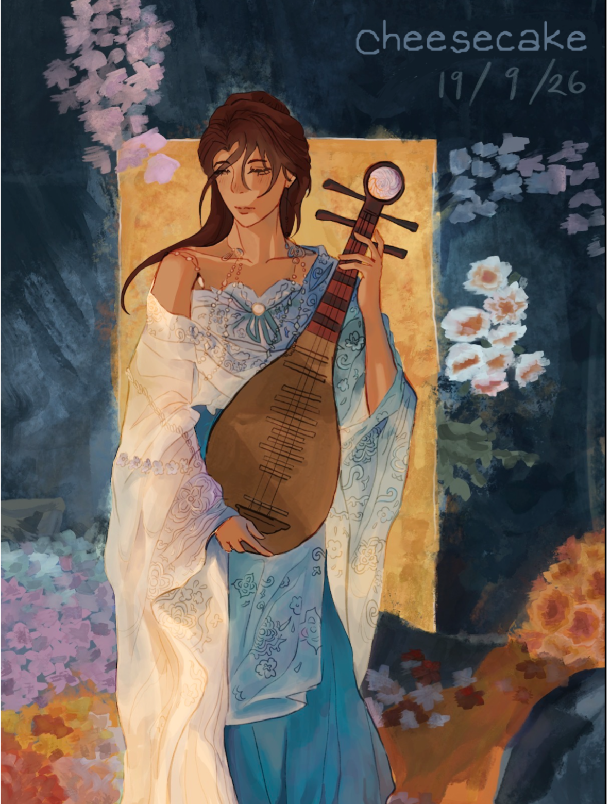
I know it looks like I scribbled out the og signature, but I swear it’s mine I just didn’t want to dox myself
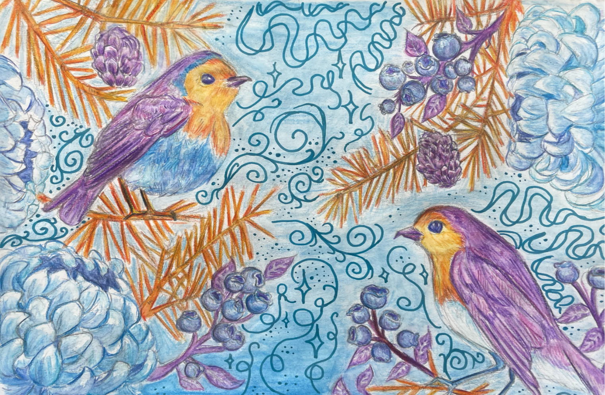
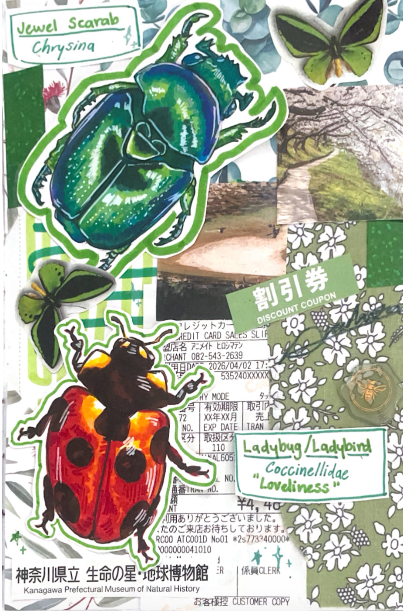
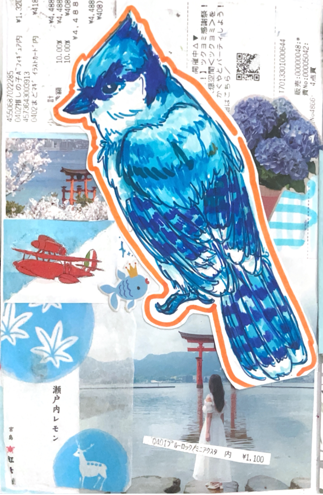
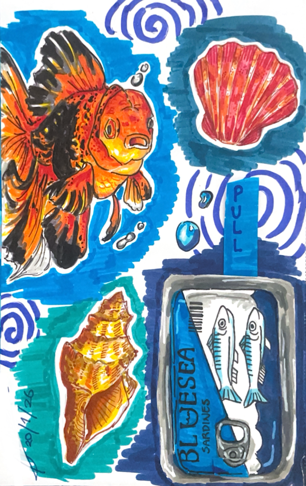
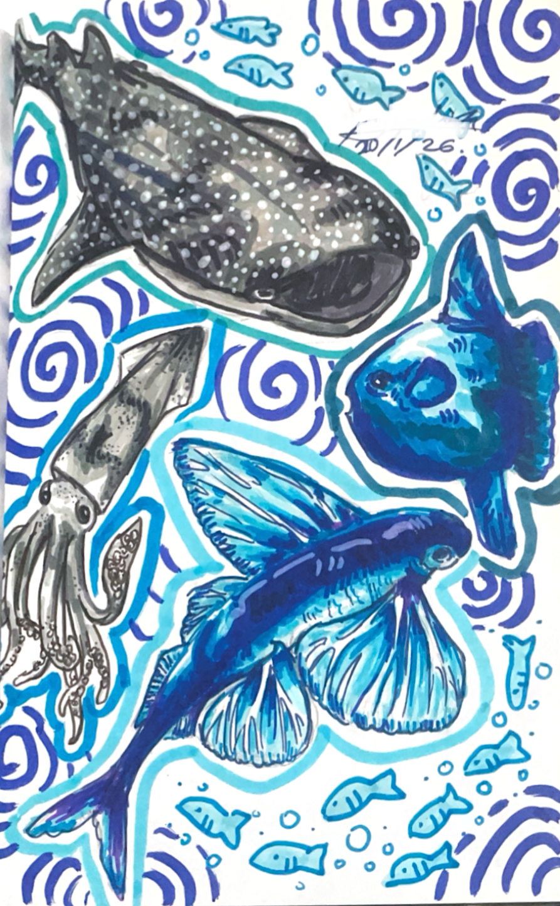
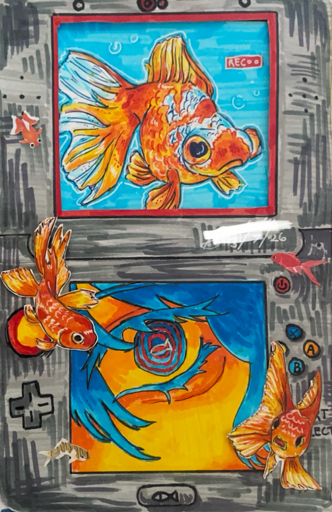
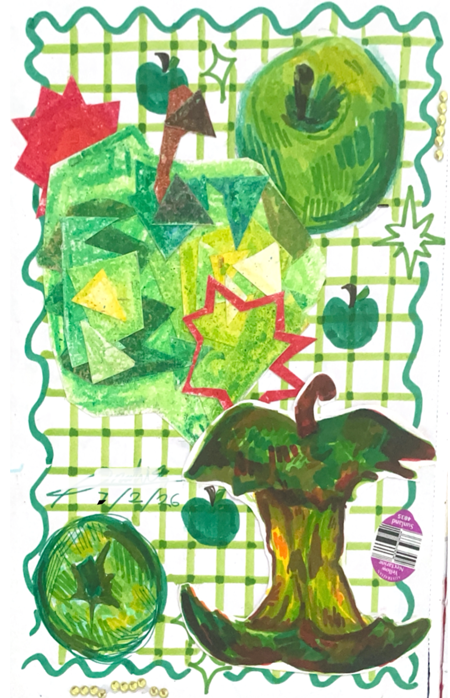
Mixed Media Experiment with textas, oil pastels, watercolour brush markers, and crayon.
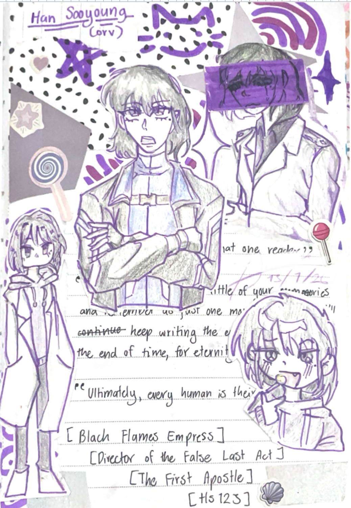
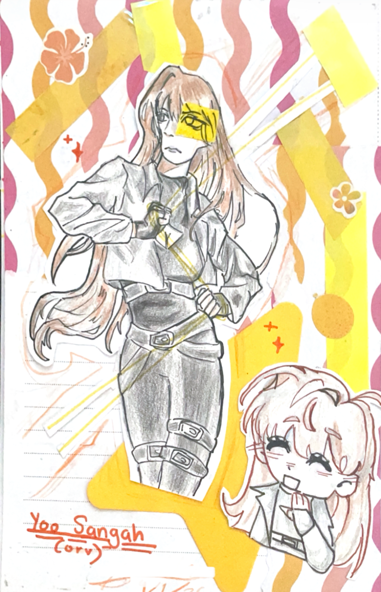
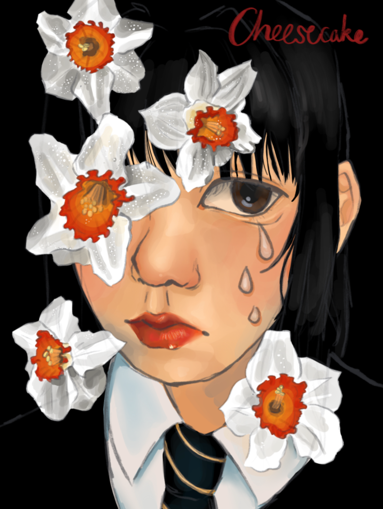
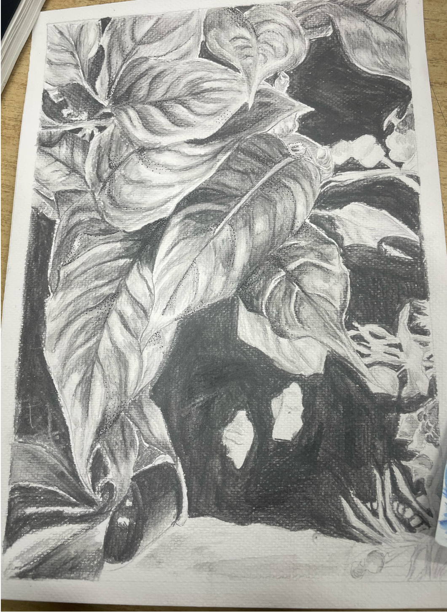
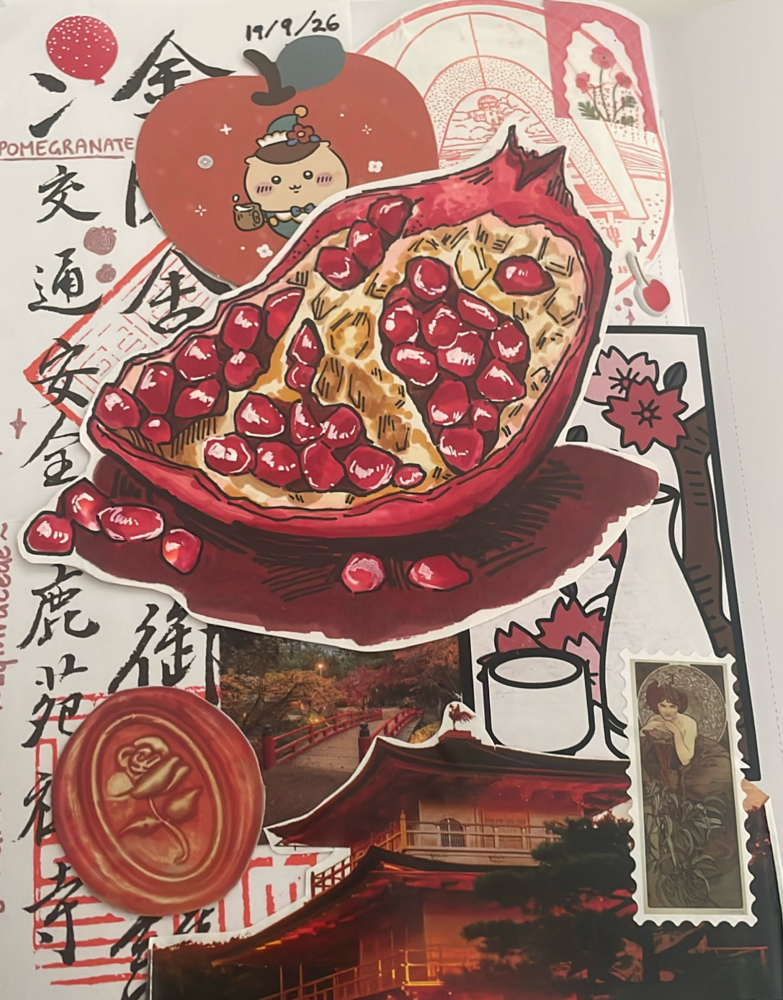
Alcohol Marker Trial with scrapbooking